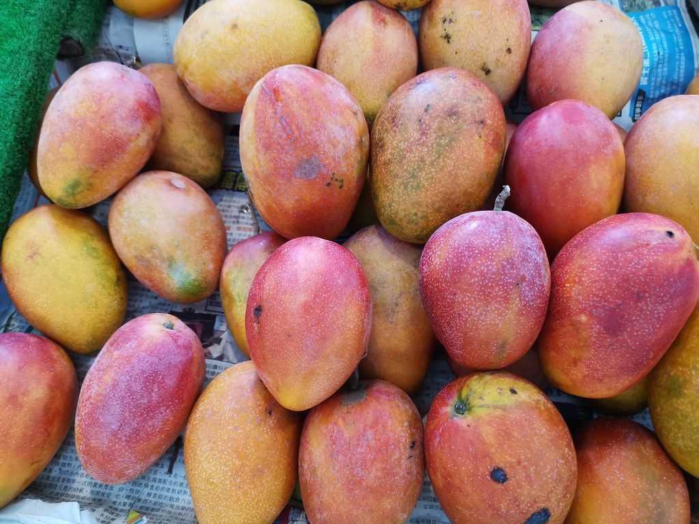
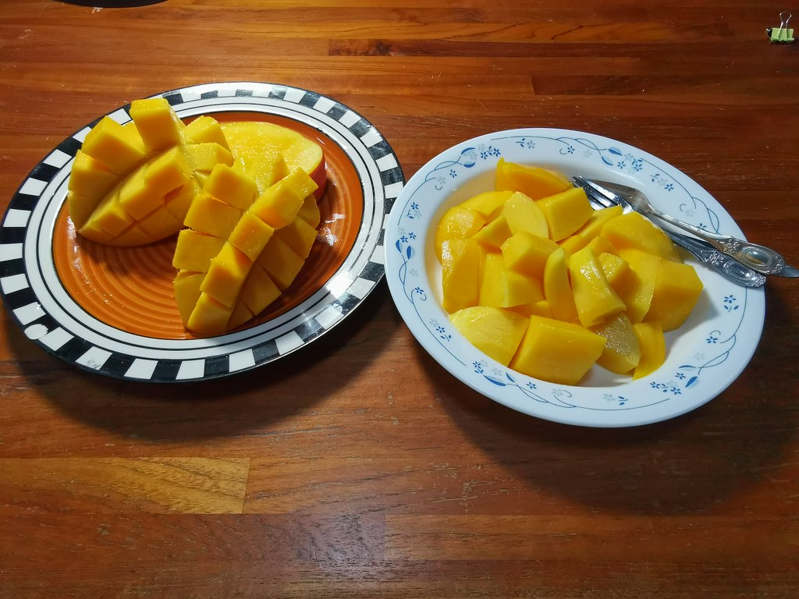

芒果
別名 檬果、檨仔、蕃檨
芒果起源於印度，現在廣佈於熱帶區域，尤以印度及中國種植最盛。目前全世界品種眾多，其在台灣亦廣泛種植為果樹，尤以台南、高雄、屏東一帶最多（亦有種植為行道樹及景觀用樹者）。

芒果香甜軟嫩、營養豐富，是許多人的最愛
芒果是夏季盛產的水果，在台灣
每年約產17萬噸，換算將近5億顆
，主要產地在台南、高雄、屏東地區。而水果王國台灣，品種量更堪稱世界之最。由於芒果在台灣如此常見，很多人認為芒果為台灣本土植物。但台灣原本是沒有芒果的喔！最早出現的芒果是在明嘉靖年間引入台灣，開始大規模栽培則是荷蘭人據台時期引入土芒果樹苗開始，雖然日據時期也有從南洋引進33種品種，但由於這些種類不耐台灣低溫而產量不佳，現今僅剩其中三種品種尚有人零星種植。一直到1954年由政府從美國引進愛文、凱特、海頓芒果後，開始了台灣芒果培育的濫殤，在農民及農試所、農改場的努力之下，現在台灣已有逾20個風味、質地各異的芒果品種在市面上販售。

芒果在台灣十分受歡迎
台灣芒果的品種多樣，不管是直接吃、當佐料或者打成冰沙都十分消暑。然而也有人說芒果有毒，不宜多食。其實這句話有些誤解，芒果果肉多汁香甜，營養價值豐富，且膳食纖維多，抗氧化力佳，具有護眼、養顏抗老、調節血壓等功效，依據美國德州農工大學的研究發現，芒果含有的多酚類物質，甚至可降低罹患癌症的風險，尤以預防乳癌和大腸癌最的效果最明顯。一般人所謂的毒其實不在我們食用的果肉中，而是在果皮及樹體本身產出的汁液上。芒果屬於漆樹科的植物，其樹體產生的漆酚對皮膚敏感的人來說是一大過敏原，因此有些人在吃芒果的過程中因接觸果皮、果蒂上的汁液而引發嚴重的過敏。我們只要在處理芒果時帶手套，並以削皮代替剝皮，削皮時能稍微削深一點，便可以避開風險。不過芒果的糖份很高，且容易助長體內溼氣，因此血糖不穩定及腎臟不好的人建議還是適量攝取就好。
資料來源: